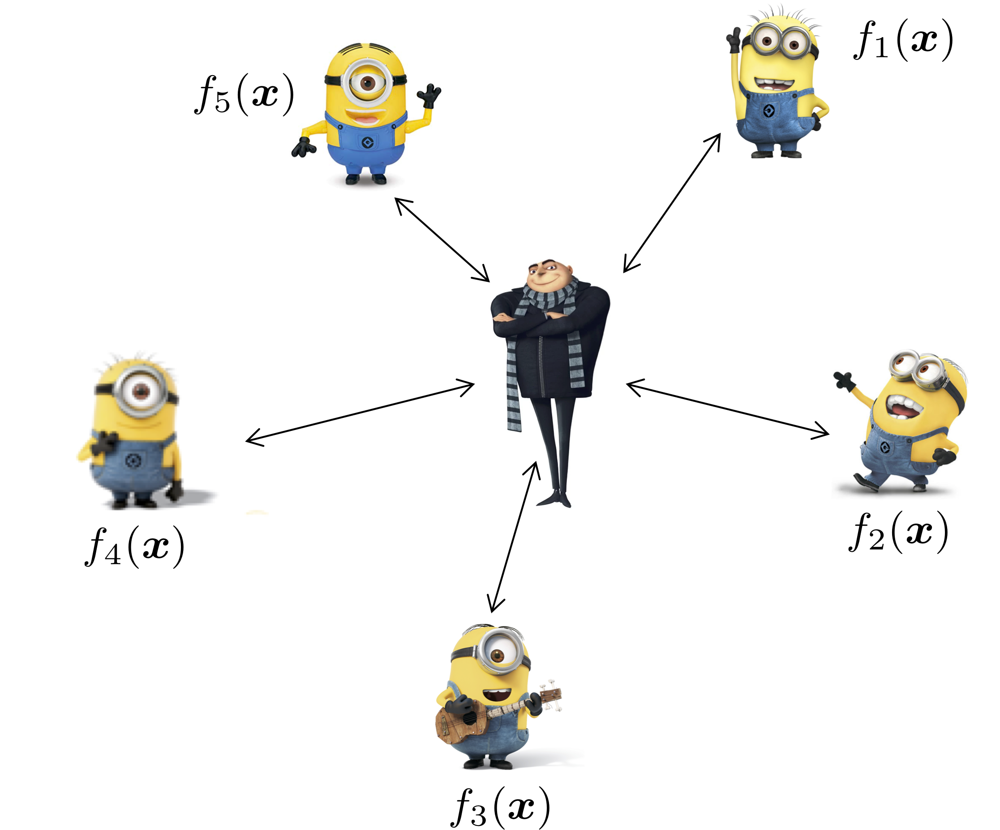

Yuejie Chi
Resource-Efficient Decentralized and Federated Learning

Distributed optimization has been a classic topic, yet is attracting significant interest recently in machine learning due to its numerous applications such as distributed training, multi-agent learning, federated optimization, and so on. Often, the scale of modern datasets has exceeded the capacity of a single machine, and privacy and communication constraints prevent information sharing in a centralized manner and necessitates distributed infrastructures. Broadly speaking, there are two types of distributed settings: a distributed/federated setting, where a parameter server aggregates and shares parameters across all agents; and a decentralized/network setting, where each agent only aggregates and shares parameters with its neighbors over a network topology. The canonical problem of empirical risk minimization in the distributed setting leads to intriguing trade-offs between computation and communication that are not well understood; moreover, data unbalancedness and heterogeneity across agents poses additional challenges in both algorithmic convergence and statistical efficacy, often exacerbated by additional bandwidth and privacy constraints.
Overview
-
Advances in Federated Optimization: Efficiency, Resiliency, and Privacy
Y. Chi and Z. Li, ICASSP tutorial, 2023.
Communication-Privacy Trade-offs
Characterizing the Accuracy-Communication-Privacy Trade-off in Distributed Stochastic Convex Optimization [Arxiv]
S. Salgia, N. Pavlovic, Y. Chi and Q. Zhao, International Conference on Artificial Intelligence and Statistics (AISTATS), 2025.Convergence and Privacy of Decentralized Nonconvex Optimization with Gradient Clipping and Communication Compression [Arxiv]
B. Li and Y. Chi, IEEE Journal of Selected Topics in Signal Processing, vol. 19, no. 1, pp. 273-282, 2025.SoteriaFL: A Unified Framework for Private Federated Learning with Communication Compression [Arxiv] [Code]
Z. Li, H. Zhao, B. Li, and Y. Chi, Conference on Neural Information Processing Systems (NeurIPS), 2022.
Communication-Efficient Federated and Decentralized Optimization
Communication-Efficient Federated Optimization over Semi-Decentralized Networks [Arxiv]
H. Wang and Y. Chi, IEEE Trans. on Signal and Information Processing over Networks, vol. 11, pp. 147-160, 2025. Short version at ICASSP 2024.Escaping Saddle Points in Heterogeneous Federated Learning via Distributed SGD with Communication Compression [Arxiv]
S. Chen, Z. Li, and Y. Chi, International Conference on Artificial Intelligence and Statistics (AISTATS), 2024.-
BEER: Fast O(1/T) Rate for Decentralized Nonconvex Optimization with Communication Compression [Arxiv] [Code]
H. Zhao, B. Li, Z. Li, P. Richtarik, and Y. Chi, Conference on Neural Information Processing Systems (NeurIPS), 2022. -
DESTRESS: Computation-Optimal and Communication-Efficient Decentralized Nonconvex Finite-Sum Optimization [Arxiv] [Code]
B. Li, Z. Li, and Y. Chi, SIAM Journal on Mathematics of Data Science, vol. 4, no. 3, pp. 1031-1051, 2022. Short version at OPT 2021 as a spotlight presentation. -
Communication-Efficient Distributed Optimization in Networks with Gradient Tracking and Variance Reduction [Arxiv] [Code]
B. Li, S. Cen, Y. Chen, and Y. Chi, Journal of Machine Learning Research, vol. 21, no. 180, pp. 1-51, 2020. Short version at AISTATS 2019. -
Convergence of Distributed Stochastic Variance Reduced Methods without Sampling Extra Data [Arxiv]
S. Cen, H. Zhang, Y. Chi, W. Chen and T.-Y. Liu, IEEE Trans. on Signal Processing, vol. 68, pp. 3976-3989, 2020.
Vertical Federated Learning
Vertical Federated Learning with Missing Features During Training and Inference [Arxiv]
P. Valdeira, S. Wang, and Y. Chi, International Conference on Learning Representations (ICLR), 2025.Communication-efficient Vertical Federated Learning via Compressed Error Feedback [Arxiv]
P. Valdeira, J. Xavier, C. Soares, and Y. Chi, IEEE Trans. on Signal Processing, vol. 73, pp. 1065-1080, 2025. Short version at EUSIPCO 2024 as an invited paper.A Multi-Token Coordinate Descent Method for Semi-Decentralized Vertical Federated Learning [Arxiv]
P. Valdeira, Y. Chi, C. Soares, and J. Xavier, preprint.
Federated Reinforcement Learning
The Blessing of Heterogeneity in Federated Q-Learning: Linear Speedup and Beyond [Arxiv]
J. Woo, G. Joshi, and Y. Chi, Journal of Machine Learning Research, vol. 26, no. 26, pp. 1-85, 2025. Short version at ICML 2023.The Sample-Communication Complexity Trade-off in Federated Q-Learning [Arxiv]
S. Salgia and Y. Chi, Conference on Neural Information Processing Systems (NeurIPS), 2024, oral presentation.Federated Natural Policy Gradient and Actor Critic Methods for Multi-task Reinforcement Learning [Arxiv]
T. Yang, S. Cen, Y. Wei, Y. Chen, and Y. Chi, Conference on Neural Information Processing Systems (NeurIPS), 2024.Federated Offline Reinforcement Learning: Collaborative Single-Policy Coverage Suffices [Arxiv]
J. Woo, L. Shi, G. Joshi, and Y. Chi, International Conference on Machine Learning (ICML), 2024.